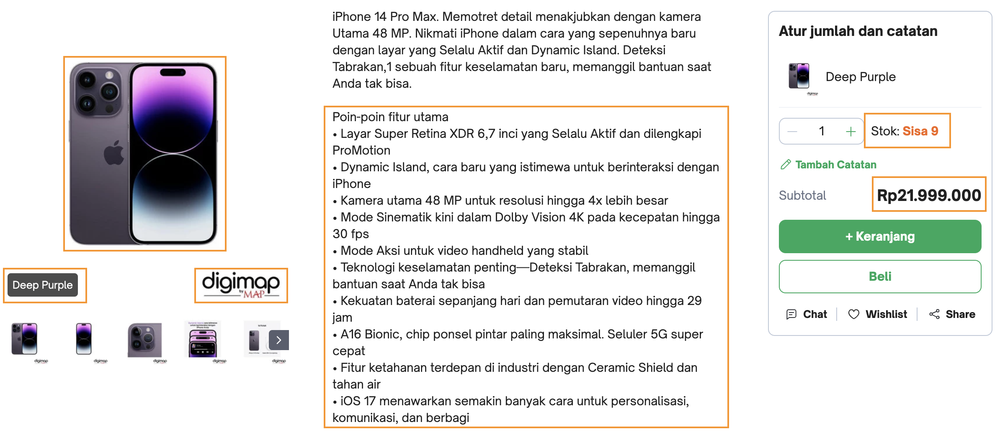

Designing a Conjoint Survey#
Selamat datang di hari kedua pada seri webinar Conjoint Analysis for Retail Business.
Sebagai ikhtisar, kita akan membahas beberapa topik seputar:
implementasi analisis konjoin
identifikasi atribut dan level
tips melakukan analisis konjoin
Studi Konjoin#
Dari beberapap jenis studi konjoin, rating-based dan choice-based adalah dua pendekatan yang paling sering digunakan. Tergantung pendekatan mana yang dipakai, secara umum, diagram berikut mengilustrasikan langkah-langkah dalam sebuah studi konjoin.
Berdasarkan diagram di atas, langkah pertama sebelum memulai sebuah studi konjoin tentu saja adalah menentukan studi konjoin. Kali ini, kita akan melakukan studi konjoin pada bidang retail, khususnya pada produk mobil.
Warning
Dalam praktiknya, setelah mendefinisikan masalah dan bagaimana hasil dari studi akan digunakan, masalah berikutnya tidak hanya menentukan atribut-atribut dari sebuah produk, tapi juga menentukan **bagaimana produk dengan atribut tersebut dapat dijual atau bahkan memotong penjualan produk lama.
Identifikasi Atribut dan Level#
Seperti yang disebutkan pada materi hari pertama, pendekatan studi konjoin bertujuan untuk menemukan “fungsi preferensi” dari sebuah produk berdasarkan atributnya. Oleh karena itu, identifikasi atribut menjadi langkah yang paling penting dalam sebuah studi konjoin.
Atribut dari sebuah produk dapat dibagi menjadi 2 jenis:
kategoris
Contoh atribut kategoris seperti nama brand, jenis transmisi pada mobil, dan sejenisnya. Sehingga, level dari atribut ini juga berbentuk kategoris, tapi tidak harus memiliki urutan yang jelas.
kuantitatif
Berbeda dengan atribut kategoris, atribut kuantitatif biasanya berupa sebuah interval atau rasio.
Kategoris vs Kuantitatif
Dari gambar berikut ini, coba tentukan mana yang bisa menjadi atribut kategoris dan mana yang kuantitatif?
Pada dasarnya, pemilihan atribut dan level sebenarnya lebih ke urusan kreativitas dibanding sains (Rao [Rao14]). Lalu, darimana kita bisa menentukan atribut-atribut tersebut?
informasi yang dikumpulkan dari survei konsumen yang pernah dilakukan sebelumnya
sumber eksternal seperti Consumer Insights dari Google atau sejenisnya, yang relevan dengan produk kita
sesi workshop atau brainstorming internal perusahaan
melakukan analisis terhadap revealed preference data
Membuat Alternatif Survei dengan Python#
Misal kita ingin mendesain survei konjoin untuk mobil sport dengan pilihan atribut dan masing-masing level berikut:
seat: 2, 4, 5convert: yes, notrans: manual, autosegment: basic, fun, racerprice: 30, 40, 50
Salah satu caranya adalah dengan membuat semua kombinasi yang mungkin dari masing-masing atribut dan juga level tersebut
import pandas as pd
from itertools import product
att_seat = [2, 4, 5]
att_convert = ["Yes", "No"]
att_trans = ["manual", "auto"]
att_segment = ["basic", "fun", "racer"]
att_price = [30, 40, 50]
all_combinations = product(att_seat, att_convert, att_trans, att_segment, att_price)
attributes = pd.DataFrame(
[combination for combination in all_combinations],
columns=["seat", "convert", "trans", "segment", "price"]
)
attributes
| seat | convert | trans | segment | price | |
|---|---|---|---|---|---|
| 0 | 2 | Yes | manual | basic | 30 |
| 1 | 2 | Yes | manual | basic | 40 |
| 2 | 2 | Yes | manual | basic | 50 |
| 3 | 2 | Yes | manual | fun | 30 |
| 4 | 2 | Yes | manual | fun | 40 |
| ... | ... | ... | ... | ... | ... |
| 103 | 5 | No | auto | fun | 40 |
| 104 | 5 | No | auto | fun | 50 |
| 105 | 5 | No | auto | racer | 30 |
| 106 | 5 | No | auto | racer | 40 |
| 107 | 5 | No | auto | racer | 50 |
108 rows × 5 columns
for i in range(100):
display(attributes.sample(3))
break
| seat | convert | trans | segment | price | |
|---|---|---|---|---|---|
| 80 | 5 | Yes | manual | racer | 50 |
| 71 | 4 | No | auto | racer | 50 |
| 61 | 4 | No | manual | racer | 40 |
surveys = []
n_alternatives = 3
n_questions = 10
for i in range(n_questions):
sample = attributes.sample(n_alternatives)
sample["questions"] = i + 1
sample["alt"] = list(range(1, n_alternatives+1))
surveys.append(sample)
df_surveys = pd.concat(surveys).reset_index(drop=True)
df_surveys
| seat | convert | trans | segment | price | questions | alt | |
|---|---|---|---|---|---|---|---|
| 0 | 4 | Yes | manual | basic | 50 | 1 | 1 |
| 1 | 4 | No | manual | fun | 40 | 1 | 2 |
| 2 | 4 | No | manual | racer | 30 | 1 | 3 |
| 3 | 2 | Yes | manual | basic | 50 | 2 | 1 |
| 4 | 2 | No | auto | fun | 50 | 2 | 2 |
| 5 | 4 | No | auto | fun | 50 | 2 | 3 |
| 6 | 4 | Yes | manual | fun | 30 | 3 | 1 |
| 7 | 5 | No | auto | fun | 50 | 3 | 2 |
| 8 | 4 | Yes | auto | racer | 50 | 3 | 3 |
| 9 | 2 | No | manual | racer | 40 | 4 | 1 |
| 10 | 2 | Yes | auto | fun | 40 | 4 | 2 |
| 11 | 2 | Yes | manual | basic | 30 | 4 | 3 |
| 12 | 2 | Yes | manual | fun | 40 | 5 | 1 |
| 13 | 2 | No | auto | fun | 40 | 5 | 2 |
| 14 | 2 | Yes | auto | fun | 40 | 5 | 3 |
| 15 | 4 | Yes | manual | fun | 30 | 6 | 1 |
| 16 | 4 | No | manual | racer | 30 | 6 | 2 |
| 17 | 2 | No | manual | fun | 50 | 6 | 3 |
| 18 | 4 | Yes | auto | fun | 40 | 7 | 1 |
| 19 | 4 | Yes | auto | racer | 40 | 7 | 2 |
| 20 | 4 | No | manual | basic | 30 | 7 | 3 |
| 21 | 4 | Yes | manual | basic | 30 | 8 | 1 |
| 22 | 5 | Yes | manual | basic | 50 | 8 | 2 |
| 23 | 4 | Yes | manual | fun | 30 | 8 | 3 |
| 24 | 4 | Yes | manual | fun | 50 | 9 | 1 |
| 25 | 5 | No | auto | fun | 40 | 9 | 2 |
| 26 | 2 | No | manual | fun | 30 | 9 | 3 |
| 27 | 2 | Yes | manual | fun | 50 | 10 | 1 |
| 28 | 5 | Yes | manual | fun | 40 | 10 | 2 |
| 29 | 2 | Yes | auto | basic | 40 | 10 | 3 |
Metode pembuatan profil seperti di atas disebut juga sebagai full factorial design.
Metode ini kurang begitu praktis mengingat jumlah profil yang dihasilkan akan semakin membesar dengan semakin banyaknya pilihan atribut dan level masing-masing.
len(att_seat) * len(att_convert) * len(att_price) * len(att_segment) * len(att_trans)
108
Oleh karena itu, daripada memuat semua 108 profil, kita bisa menggunakan pendekatan fractional factorial design. Dengan pendekatan ini, kita bisa memiih fraction dari total profil yang mungkin.
Misalkan dari 108 profil yang mungkin, kita bisa memilih setengahnya, yaitu 54 untuk dipilih secara “sistematis” berdasarkan beberapa faktor seperti cost, kombinasi atribut-level yang masuk akal, durasi interview, dan lainnya.
Contoh fractional factorial design
Dari 4 atribut beserta level-levelnya:
price: USD 550, USD 700, USD 850
face ID: with face ID, without face ID
battery: 6 hours, 10 hours
bonus storage: “standard”, “plus”
jumlah keseluruhan profil yang mungkin dibentuk adalah $3 \times 2 \times 2 \times 2 = 24$. Tapi, kita memutuskan untuk menggunakan 12 profil (setengahnya) dengan urutan acak berikut.
att_price = [550, 700, 850]
att_faceid = ["Yes", "No"]
att_battery_hours = [6, 10]
att_storage = ["standard", "plus"]
all_combinations = product(att_price, att_faceid, att_battery_hours, att_storage)
attributes = pd.DataFrame(
[combination for combination in all_combinations],
columns=["Price (USD)", "Face ID", "Battery", "Bonus Storage"]
)
attributes.sample(12, random_state=1).reset_index(drop=True)
| Price (USD) | Face ID | Battery | Bonus Storage | |
|---|---|---|---|---|
| 0 | 700 | No | 6 | plus |
| 1 | 850 | Yes | 10 | standard |
| 2 | 550 | Yes | 10 | plus |
| 3 | 700 | No | 10 | standard |
| 4 | 850 | No | 6 | standard |
| 5 | 850 | Yes | 6 | plus |
| 6 | 700 | Yes | 10 | standard |
| 7 | 550 | No | 6 | standard |
| 8 | 550 | Yes | 10 | standard |
| 9 | 850 | Yes | 10 | plus |
| 10 | 550 | No | 10 | standard |
| 11 | 550 | No | 10 | plus |
Conjoint Data Collection#
Kita bisa mengumpulkan data konjoin dari mana saja, tidak hanya melalui survei langsung. Jika kita sudah mempunyai base user dan data transaksi yang cukup banyak, kita bisa merekrontuksi data tersebut menjadi data konjoin.
Misalkan, untuk membuat data konjoin dari sebuah data transaksi di sebuah supermarket dengan cara melihat apa yang pembeli beli dan apa yang tersedia saat itu.
{kind=link}
Note
Data yang direkontruksi dari proses tersebut disebut juga sebagai revealed preference data.
Akan tetapi, kadang kita tidak bisa menemukan yang kita cari dari data histori transaksi. Terutama, ketika kita mencoba menawarkan fitur baru di produk kita, yang tentu saja belum tersedia (apalagi dibeli).
Dalam kasus ini, kita bisa membuat sebuah survei kepada calon pembeli untuk membuat “pilihan”. Data yang dihasilkan dari proses inilah yang dinamakan dengan conjoint data.
Note
Nama lain dari data yang dihasilkan dari survei tersebut adalah stated preference data.
Fig. 5 Contoh survei kepada konsumen untuk memilih mobil mana yang kiranya akan dipilih atau dibeli (DataCamp [Dat])#
Full Profile#
Seperti yang sudah disebutkan di materi hari pertama, pada full-profile, kita akan menggunakan semua atribut untuk ditampilkan kepada responden. Akan tetapi, jika jumlah atribut (dan level masing-masing) tidak terlalu besar, kita bisa menampilkan semua kombinasi (profil).
Trade-Off Matrix#
Responden akan diminta untuk menilai alternatif produk dengan kombinasi 2 atribut sekaligus. Atribut-atribut tersebut akan berubah sedemikian hingga responden akan menilai semua profil dari 2 atribut tersebut. Perhatikan contoh berikut.
Fig. 6 Contoh hasil survei menggunakan trade-off matrix. Responden ini cenderung memilih Goodyear yang bertahan hingga 50k mil dan tetap memilih brand yang sama dengan daya tahan yang lebih rendah.#
Warning
Meskipun metode ini sederhana, kita tidak tahu asumsi apa yang dibuat oleh responden untuk atribut-atribut lain yang tidak dimunculkan.
Contoh Conjoint Data#
bagaimana pun kita mengumpulkan data konjoin, dan tergantung tool yang kita gunakan untuk mengumpulkan data, bentuk data konjoin memiliki format memanjang ataupun melebar.
sportscar_long = pd.read_csv("../../data/sportscar_choice/sportscar_choice_long.csv")
sportscar_wide = pd.read_csv("../../data/sportscar_choice/sportscar_choice_wide.csv")
sportscar_long
| resp_id | ques | alt | segment | seat | trans | convert | price | choice | |
|---|---|---|---|---|---|---|---|---|---|
| 0 | 1 | 1 | 1 | basic | 2 | manual | yes | 35 | 0 |
| 1 | 1 | 1 | 2 | basic | 5 | auto | no | 40 | 0 |
| 2 | 1 | 1 | 3 | basic | 5 | auto | no | 30 | 1 |
| 3 | 1 | 2 | 1 | basic | 5 | manual | no | 35 | 0 |
| 4 | 1 | 2 | 2 | basic | 2 | manual | no | 30 | 1 |
| ... | ... | ... | ... | ... | ... | ... | ... | ... | ... |
| 5995 | 200 | 9 | 2 | fun | 2 | auto | yes | 35 | 0 |
| 5996 | 200 | 9 | 3 | fun | 4 | manual | no | 30 | 0 |
| 5997 | 200 | 10 | 1 | fun | 4 | auto | yes | 40 | 0 |
| 5998 | 200 | 10 | 2 | fun | 4 | auto | no | 30 | 1 |
| 5999 | 200 | 10 | 3 | fun | 4 | manual | no | 40 | 0 |
6000 rows × 9 columns
sportscar_wide
| resp_id | ques | segment | choice | seat.1 | seat.2 | seat.3 | trans.1 | trans.2 | trans.3 | convert.1 | convert.2 | convert.3 | price.1 | price.2 | price.3 | |
|---|---|---|---|---|---|---|---|---|---|---|---|---|---|---|---|---|
| 0 | 1 | 1 | basic | 3 | 2 | 5 | 5 | manual | auto | auto | yes | no | no | 35 | 40 | 30 |
| 1 | 1 | 2 | basic | 2 | 5 | 2 | 4 | manual | manual | auto | no | no | no | 35 | 30 | 35 |
| 2 | 1 | 3 | basic | 1 | 5 | 4 | 4 | auto | auto | manual | yes | yes | no | 35 | 30 | 40 |
| 3 | 1 | 4 | basic | 3 | 2 | 4 | 4 | manual | manual | auto | yes | yes | yes | 30 | 40 | 35 |
| 4 | 1 | 5 | basic | 2 | 5 | 5 | 2 | manual | manual | auto | yes | no | yes | 40 | 30 | 40 |
| ... | ... | ... | ... | ... | ... | ... | ... | ... | ... | ... | ... | ... | ... | ... | ... | ... |
| 1995 | 200 | 6 | fun | 1 | 4 | 2 | 5 | auto | auto | manual | yes | no | yes | 30 | 30 | 35 |
| 1996 | 200 | 7 | fun | 2 | 2 | 5 | 4 | auto | auto | auto | no | yes | yes | 40 | 30 | 35 |
| 1997 | 200 | 8 | fun | 1 | 2 | 2 | 4 | manual | manual | manual | no | yes | yes | 30 | 40 | 35 |
| 1998 | 200 | 9 | fun | 1 | 4 | 2 | 4 | auto | auto | manual | no | yes | no | 35 | 35 | 30 |
| 1999 | 200 | 10 | fun | 2 | 4 | 4 | 4 | auto | auto | manual | yes | no | no | 40 | 30 | 40 |
2000 rows × 16 columns
Data dengan format melebar ini biasanya kita temukan jika kita menggunakan tools seperti Google Form atau Qualtrics. Untuk itu, kita perlu merubah data dengan format melebar ini menjadi format memanjang untuk memudahkan kita dalam melakukan eksplorasi dan visualisasi.
sportscar_long
| resp_id | ques | alt | segment | seat | trans | convert | price | choice | |
|---|---|---|---|---|---|---|---|---|---|
| 0 | 1 | 1 | 1 | basic | 2 | manual | yes | 35 | 0 |
| 1 | 1 | 1 | 2 | basic | 5 | auto | no | 40 | 0 |
| 2 | 1 | 1 | 3 | basic | 5 | auto | no | 30 | 1 |
| 3 | 1 | 2 | 1 | basic | 5 | manual | no | 35 | 0 |
| 4 | 1 | 2 | 2 | basic | 2 | manual | no | 30 | 1 |
| ... | ... | ... | ... | ... | ... | ... | ... | ... | ... |
| 5995 | 200 | 9 | 2 | fun | 2 | auto | yes | 35 | 0 |
| 5996 | 200 | 9 | 3 | fun | 4 | manual | no | 30 | 0 |
| 5997 | 200 | 10 | 1 | fun | 4 | auto | yes | 40 | 0 |
| 5998 | 200 | 10 | 2 | fun | 4 | auto | no | 30 | 1 |
| 5999 | 200 | 10 | 3 | fun | 4 | manual | no | 40 | 0 |
6000 rows × 9 columns
sportscar_wide["id"] = sportscar_wide.index
sportscar = pd.wide_to_long(
sportscar_wide,
["seat", "trans", "convert", "price"],
i="id", j="alt", sep="."
).reset_index(level="alt")
sportscar
| alt | segment | choice | resp_id | ques | seat | trans | convert | price | |
|---|---|---|---|---|---|---|---|---|---|
| id | |||||||||
| 0 | 1 | basic | 3 | 1 | 1 | 2 | manual | yes | 35 |
| 1 | 1 | basic | 2 | 1 | 2 | 5 | manual | no | 35 |
| 2 | 1 | basic | 1 | 1 | 3 | 5 | auto | yes | 35 |
| 3 | 1 | basic | 3 | 1 | 4 | 2 | manual | yes | 30 |
| 4 | 1 | basic | 2 | 1 | 5 | 5 | manual | yes | 40 |
| ... | ... | ... | ... | ... | ... | ... | ... | ... | ... |
| 1995 | 3 | fun | 1 | 200 | 6 | 5 | manual | yes | 35 |
| 1996 | 3 | fun | 2 | 200 | 7 | 4 | auto | yes | 35 |
| 1997 | 3 | fun | 1 | 200 | 8 | 4 | manual | yes | 35 |
| 1998 | 3 | fun | 1 | 200 | 9 | 4 | manual | no | 30 |
| 1999 | 3 | fun | 2 | 200 | 10 | 4 | manual | no | 40 |
6000 rows × 9 columns
fields = [
"resp_id", "ques", "alt", "segment", "seat",
"trans", "convert", "price", "choice"
]
sportscar = sportscar.sort_values(["resp_id", "ques", "alt"])[fields].reset_index(drop=True)
sportscar
| resp_id | ques | alt | segment | seat | trans | convert | price | choice | |
|---|---|---|---|---|---|---|---|---|---|
| 0 | 1 | 1 | 1 | basic | 2 | manual | yes | 35 | 3 |
| 1 | 1 | 1 | 2 | basic | 5 | auto | no | 40 | 3 |
| 2 | 1 | 1 | 3 | basic | 5 | auto | no | 30 | 3 |
| 3 | 1 | 2 | 1 | basic | 5 | manual | no | 35 | 2 |
| 4 | 1 | 2 | 2 | basic | 2 | manual | no | 30 | 2 |
| ... | ... | ... | ... | ... | ... | ... | ... | ... | ... |
| 5995 | 200 | 9 | 2 | fun | 2 | auto | yes | 35 | 1 |
| 5996 | 200 | 9 | 3 | fun | 4 | manual | no | 30 | 1 |
| 5997 | 200 | 10 | 1 | fun | 4 | auto | yes | 40 | 2 |
| 5998 | 200 | 10 | 2 | fun | 4 | auto | no | 30 | 2 |
| 5999 | 200 | 10 | 3 | fun | 4 | manual | no | 40 | 2 |
6000 rows × 9 columns
sportscar["choice"] = (sportscar["choice"] == sportscar["alt"]).astype("int")
sportscar
| resp_id | ques | alt | segment | seat | trans | convert | price | choice | |
|---|---|---|---|---|---|---|---|---|---|
| 0 | 1 | 1 | 1 | basic | 2 | manual | yes | 35 | 0 |
| 1 | 1 | 1 | 2 | basic | 5 | auto | no | 40 | 0 |
| 2 | 1 | 1 | 3 | basic | 5 | auto | no | 30 | 1 |
| 3 | 1 | 2 | 1 | basic | 5 | manual | no | 35 | 0 |
| 4 | 1 | 2 | 2 | basic | 2 | manual | no | 30 | 1 |
| ... | ... | ... | ... | ... | ... | ... | ... | ... | ... |
| 5995 | 200 | 9 | 2 | fun | 2 | auto | yes | 35 | 0 |
| 5996 | 200 | 9 | 3 | fun | 4 | manual | no | 30 | 0 |
| 5997 | 200 | 10 | 1 | fun | 4 | auto | yes | 40 | 0 |
| 5998 | 200 | 10 | 2 | fun | 4 | auto | no | 30 | 1 |
| 5999 | 200 | 10 | 3 | fun | 4 | manual | no | 40 | 0 |
6000 rows × 9 columns
(sportscar_long == sportscar).sum()
resp_id 6000
ques 6000
alt 6000
segment 6000
seat 6000
trans 6000
convert 6000
price 6000
choice 6000
dtype: int64
Tips dalam Melakukan Studi Konjoin#
Perlu diingat bahwa atribut merupakan “dimensi” produk, seperti harga, warna, ukuran, merk, lokasi, dan lainnya. Kaitannya dengan atribut (Rao [Rao14]):
Masukkan ke dalam pertanyaan survei, atribut-atribut yang menurut kamu penting bagi konsumen ketika mereka hendak membeli dan/atau atribut lainnya yang ingin kamu pastikan dampaknya. Misalkan, kamu memahami bahwa preferensi konsumen tergantung kepada harga dan ukuran produk, dan kamu ingin memastikan apakah pilihan warna juga penting, maka kamu bisa sertakan ketiga atribut tersebut, yaitu harga, ukuran, dan juga warna
Usahakan jangan memasukkan lebih dari 7 atribut supaya tidak membuat konsumen semakin bingung terlihat terlalu memaksa.
Secara umum, harga menjadi satu atribut yang sulit untuk tidak disertakan, jadi sertakan saja.
Selain atribut, kita juga perlu memperhatikan soal level. Level merupakan opsi nilai yang mungkin dari sebuah atribut. Misalkan, atribut warna mungkin memiliki 3 level, yaitu merah, kuning, dan hijau.
Pastikan bahwa setidaknya kamu memiliki minimal 2 level per atribut.
Level harus detail, misalkan level dari atribut resolusi kamera sebuah handphone adalah 46 MP, 50 MP, atau 52 MP. Bukan “lebih dari 45 MP” ataupun “tidak lebih dari 50 MP”.
Pastikan bahwa level setiap atribut realistis (tapi belum perlu feasible di waktu studi dilakukan)
Level-level pada satu atribut harus saling lepas satu sama lain. Misalkan untuk produk snack untuk atribut rasa, hindari nilai seperti “manis” dan “pedas manis”. Sebagai alternatif, kita bisa buat rasa seperti “caramel” dan “spicy”.
Selain itu, untuk atribut dan level-nya:
Pastikan untuk menggunakan bahasa atau istilah yang mudah dimengerti oleh konsumen.
Jika kesulitan, a picture is worth a thousand words.